CS 285 Lec 14: RL with Sequences & LLMs
第1章：奖励学习与逆强化学习回顾
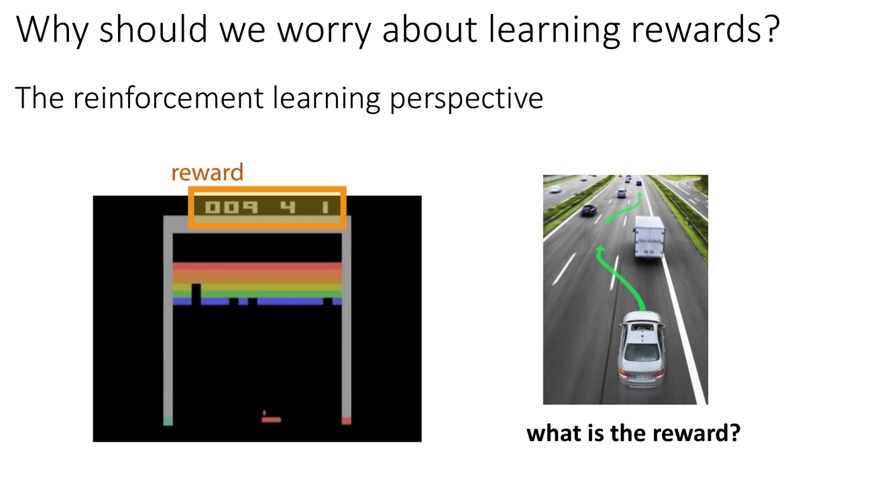
为什么学习奖励函数
概念详解
第14讲以一个大哉问开场："What is the reward?"（奖励到底是什么？）在之前的所有 RL 讨论中，我们默认奖励函数 $r(s,a)$ 是已知的——环境会告诉我们每一步获得了多少奖励。但在现实世界中，奖励函数的设计（reward engineering）往往是最困难的部分。想想看：自动驾驶的奖励函数是什么？它应该包含安全距离、交通规则遵守、乘客舒适度、通行效率等几十个维度的加权组合——每个权重怎么设？不同场景下权重是否要变化？"不要撞人"和"不要急刹车"这两条规则怎么在同一个标量奖励里和谐共存？
逆强化学习（Inverse Reinforcement Learning, IRL）提供了一个根本性的替代方案：与其手工设计奖励函数，不如从专家的行为数据中自动推断奖励函数。IRL 的核心假设是：如果我们观察到专家在某些状态下选择某些动作，那么这些选择本身就编码了关于"什么是好行为"的信息——专家的策略是（近似）最优的，因此奖励函数应该使专家策略成为最优策略。在"控制即推断"（Control as Inference, 第12–13讲）的概率框架下，IRL 可以被理解为：给定观测到的"最优行为"，反推最可能产生这些行为的奖励函数。
IRL 的一个关键优势是：奖励函数比策略更紧凑、更可迁移。策略 $\pi(a|s)$ 绑定于特定的环境动态和状态空间——把 MuJoCo 中训练好的行走策略直接搬到真实机器人上几乎肯定失败。但奖励函数 $r(s,a)$ 编码的是任务的本质目标（"保持平衡地向前移动"），它可以跨环境复用。这个洞察直接延伸到现代 LLM 训练：在 RLHF 中，我们首先从人类偏好数据学习一个奖励模型（reward model），然后用它来优化语言模型——这个奖励模型扮演的角色与 IRL 中学到的奖励函数完全相同。
深度剖析 — IRL 的数学定义
IRL 的形式化定义（Ng & Russell, 2000）如下：给定一个 MDP（不含奖励函数）以及一组专家演示轨迹 $\mathcal{D}_{\text{demo}} = \{\tau_1, \tau_2, \ldots\}$（每条轨迹 $\tau = (s_0, a_0, s_1, a_1, \ldots)$），找到一个奖励函数 $r(s,a)$ 使得专家策略 $\pi_E$ 在这个奖励函数下是最优的。但这一定义面临一个根本问题：退化解——全零奖励 $r(s,a) \equiv 0$ 使得所有策略都是最优的！IRL 需要一个额外的结构假设来排除这种退化解——典型的做法是引入最大熵/最大边际原则：奖励函数不仅应使专家最优，还应使专家的优势尽可能大（相对于其他策略），从而唯一地确定一个有意义的奖励函数。
在最大熵 IRL（Ziebart et al., 2008）中，最优策略的形式为 $\pi(a|s) \propto \exp(Q_{\text{soft}}(s,a))$，其中 $Q_{\text{soft}}$ 由 soft Bellman 方程定义。在这种框架下，给定奖励函数可以唯一确定策略，而给定（随机）策略也可以唯一地反推奖励函数——奖励函数被"识别"了。这一理论与第12–13讲的"控制即推断"框架完美咬合，构成了本讲 IRL 讨论的数学基础。
关键要点
- 手工设计奖励（reward engineering）在复杂任务中极其困难且不可扩展
- IRL 的核心思想：从专家行为中反推产生该行为的奖励函数
- 奖励函数比策略更可迁移——编码任务本质而非环境特定的动作序列
- 最大熵原则提供了 IRL 解的唯一性保证，与控制即推断框架一致
- IRL → 奖励模型的思想直接成为现代 RLHF 的理论基础
→ IRL 的具体实现依赖于将奖励函数嵌入概率图形模型——Slide 4–6 引入最优性变量的概念，这是连接经典 IRL 与现代深度学习实现的桥梁。
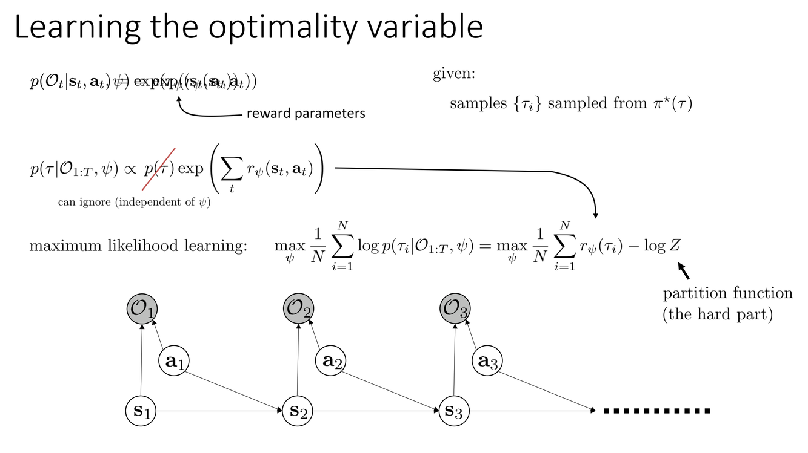
最优性变量、配分函数与 IRL 的训练
概念详解
Slide 4 回顾了 IRL 在当前课程框架中的核心技术组件。回顾"控制即推断"的概率图形模型：我们引入二值随机变量 $\mathcal{O}_t \in \{0, 1\}$ 表示时刻 $t$ 的行为是否"最优"。其条件概率被建模为奖励的指数变换：
$$p(\mathcal{O}_t = 1 | s_t, a_t) = \exp(r_\psi(s_t, a_t))$$其中 $r_\psi$ 是以 $\psi$ 为参数的奖励函数（通常是一个神经网络）。这一定义的动机来自最大熵 RL：在 soft-optimal 策略下，动作的对数概率正比于其 Q 值；而最优性变量的概率形式使这一关系自然地纳入概率框架。
Slide 5 标注了 IRL 目标函数中配分函数（Partition Function） $Z(\psi)$ 的核心地位。IRL 的训练目标是最大化专家轨迹在 soft-optimal 后验下的似然：
$$\max_\psi \; \mathcal{L}(\psi) = \frac{1}{|\mathcal{D}_{\text{demo}}|} \sum_{\tau \in \mathcal{D}_{\text{demo}}} \left[\sum_t r_\psi(s_t, a_t)\right] - \log Z(\psi)$$其中配分函数为：
$$Z(\psi) = \int_\tau p(\tau) \exp\left(\sum_t r_\psi(s_t, a_t)\right) d\tau$$这是在所有可能的轨迹空间上进行积分——在连续高维状态和动作空间中，这不仅是不可精确计算的，甚至连近似都需要非平凡的统计学技巧。
深度剖析 — 配分函数与 IRL 梯度
配分函数 $Z(\psi)$ 是 IRL 训练的计算瓶颈。它的梯度揭示了训练过程的对抗性本质：
$$\nabla_\psi \mathcal{L}(\psi) = \underbrace{\mathbb{E}_{\tau \sim \pi_E}\left[\sum_t \nabla_\psi r_\psi(s_t, a_t)\right]}_{\text{专家轨迹上的梯度（增加奖励）}} - \underbrace{\mathbb{E}_{\tau \sim p(\tau|\mathcal{O}_{1:T},\psi)}\left[\sum_t \nabla_\psi r_\psi(s_t, a_t)\right]}_{\text{soft-optimal 策略轨迹上的梯度（降低奖励）}}$$这个梯度的结构是本质性的而不是巧合。第一项在专家轨迹上增加奖励函数的响应——奖励函数被训练为认为"专家做的是好的"。第二项在当前 soft-optimal 策略 $\pi_\psi$（即给定当前奖励函数时的"最优"策略）生成的轨迹上降低奖励——奖励函数被训练为认为"当前模型觉得好但专家不会做的事是不好的"。两项之间的拉扯构成了一种隐式的对抗博弈：奖励函数试图区分专家和模仿者，策略（通过其对配分函数的影响）试图逼近专家。Slide 6 专门讨论了如何估计这个梯度——配分函数梯度中的第二项期望需要从 soft-optimal 策略中采样，这本身需要一个内部 RL 循环。
计算 $Z(\psi)$ 梯度的主要策略：
- 直接采样：在当前 soft-optimal 策略下运行 RL 来生成轨迹样本。优点是无偏，代价是每次奖励更新都需要内部 RL 循环——计算上极其昂贵。
- 重要性采样（Slide 8）：用旧策略 $\pi_{\text{old}}$ 的样本来估计当前期望，通过重要性权重 $\frac{p(\tau|\mathcal{O}_{1:T},\psi_{\text{new}})}{p(\tau|\mathcal{O}_{1:T},\psi_{\text{old}})}$ 来修正分布差异。这避免了每次梯度更新都重新采样，但重要性权重的方差在高维轨迹空间中可能很大。
- 对抗方法（Slide 9-12）：将配分函数的学习"外包"给一个判别器——这就是 IRL 与 GAN 等价的本质。
关键要点
- 最优性变量 $p(\mathcal{O}_t=1|s_t,a_t) = \exp(r_\psi(s_t,a_t))$ 将奖励嵌入概率框架
- IRL 目标 = 最大化专家似然 = $\sum_{\tau \in \text{demo}} \sum_t r_\psi - \log Z(\psi)$
- 配分函数 $Z(\psi)$ 的梯度分解为"专家期望 $-$ soft-optimal 期望"——对抗结构
- 估计配分函数梯度是 IRL 计算的核心瓶颈，驱动了三种主要策略
→ Slide 7–8 展示了 IRL 训练中的一个实际改进——重要性采样如何降低内部 RL 循环的成本。
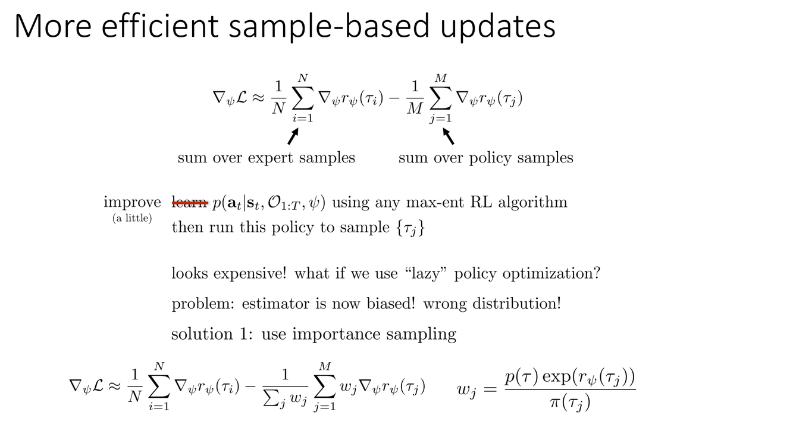
引导式代价学习与重要性采样
概念详解
Slide 7 介绍了引导式代价学习（Guided Cost Learning, Finn et al. 2016）——一种让 IRL 训练在实践上可行的重要方法。核心思想是交替执行两个步骤：(1) 在当前奖励函数下优化策略（或从最优后验中采样轨迹），(2) 用采样的轨迹来更新奖励函数。这个交替结构与 GAN 的训练完全同构——我们稍后会详细展开。
Slide 8 展示了用重要性采样（Importance Sampling）来降低内部采样成本的技术。如果我们已经有了一个"旧"的 soft-optimal 策略 $\pi_{\text{old}}$ 及其生成的轨迹集合，那么对于新的奖励参数 $\psi_{\text{new}}$，配分函数梯度中的第二项（soft-optimal 期望）可以通过重要性权重来重加权旧样本来近似，而不需要从头采样：
$$\mathbb{E}_{\tau \sim p(\tau|\mathcal{O}_{1:T},\psi_{\text{new}})}[f(\tau)] \approx \sum_{\tau \in \mathcal{D}_{\text{old}}} w(\tau) \cdot f(\tau), \quad w(\tau) = \frac{p(\tau|\mathcal{O}_{1:T},\psi_{\text{new}})}{p(\tau|\mathcal{O}_{1:T},\psi_{\text{old}})}$$这里的重要性权重 $w(\tau)$ 修正了由于奖励函数变化导致的轨迹分布偏移。但实际问题在于：在高维轨迹空间中，$\psi_{\text{new}}$ 和 $\psi_{\text{old}}$ 之间的差异可能导致重要性权重极度不均匀（方差爆炸），使估计失效。实践中通常在几次奖励更新后才重新采样。
深度剖析 — 交替优化的动力学
引导式代价学习的交替结构是理解 IRL 与 GAN 等价性的关键。在每一轮交替中：
- 策略步骤：固定奖励 $r_\psi$，在 soft-optimal 后验下（近似地）采样轨迹。这可以通过运行任何 model-free RL 算法（如 TRPO、PPO）来完成，奖励函数为 $r_\psi$
- 奖励步骤：固定轨迹分布，更新 $\psi$ 来最大化专家轨迹的似然，同时最小化当前策略轨迹的似然（通过配分函数梯度）
这个交替过程的动力学与 GAN 完全相同——策略扮演"生成器"（试图生成看起来像专家轨迹的数据），奖励函数扮演"判别器"（试图区分专家轨迹和生成轨迹）。策略和奖励之间的相互作用定义了一个两人零和博弈，其中均衡点是专家轨迹和生成轨迹在分布上不可区分。这个洞察由 Ho & Ermon (2016) 和 Finn et al. (2016) 分别从不同角度独立阐明，现在成为连接 IRL 和深度学习的一个标准视角。
关键要点
- 引导式代价学习 = 交替执行策略优化 + 奖励更新——与 GAN 训练同构
- 重要性采样允许重用旧样本来估计新奖励的配分函数梯度——降低计算成本
- 重要性权重的方差在高维轨迹空间中是实际瓶颈——需要定期重采样
- 交替优化的动力学本质上是二人零和博弈——策略 vs 奖励
→ Slide 9–12 将交替优化的直觉精确化为数学等价——IRL 就是 GAN，GAN 就是 IRL。
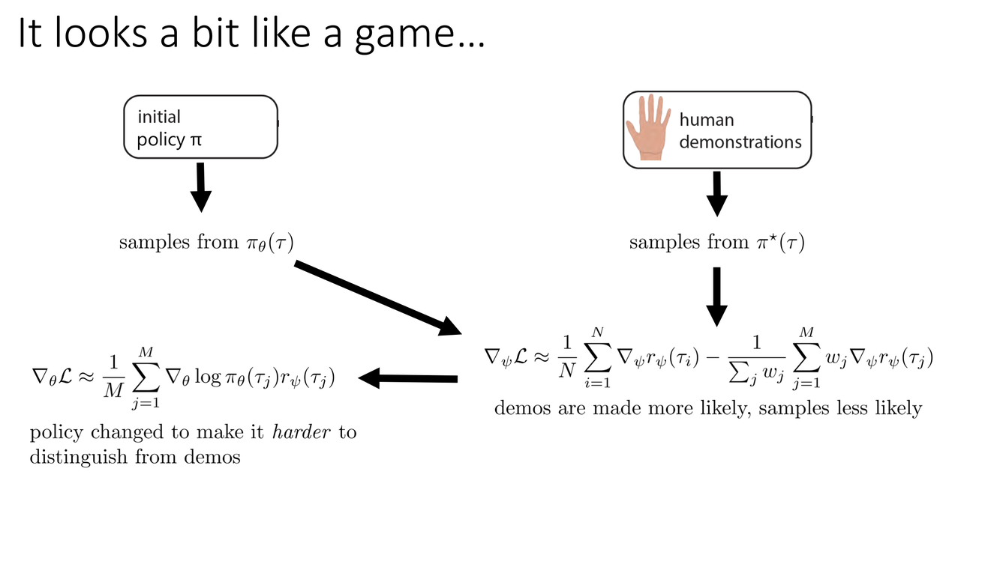
IRL 与 GAN 的精确等价 & GAIL
概念详解
Slide 9–10 展示了IRL 领域最优雅的洞察之一：IRL 在数学上与生成对抗网络（GAN, Goodfellow et al. 2014）等价。在 GAN 中，判别器 $D(x)$ 输出输入 $x$ 是"真实"（而非"生成"）的概率，生成器 $G(z)$ 试图产生能骗过判别器的样本。博弈的目标函数为：
$$\min_G \max_D \; \mathbb{E}_{x \sim p_{\text{real}}}[\log D(x)] + \mathbb{E}_{z \sim p(z)}[\log(1 - D(G(z)))]$$在 IRL/GAN 的对应中：
- 判别器 $D_\psi(s,a)$ ↔ 奖励函数 $r_\psi$，通过关系 $D_\psi(s,a) = \frac{\exp(r_\psi(s,a))}{\exp(r_\psi(s,a)) + \pi_\theta(a|s)}$
- 生成器 ↔ 策略 $\pi_\theta(a|s)$
- 真实数据 ↔ 专家演示轨迹
- 生成数据 ↔ 策略生成的轨迹
Slide 11 提出了一个自然的简化问题："能不能直接用一个普通的判别器来做模仿学习？不用显式地学习奖励函数，直接用判别器的输出作为策略的奖励信号？" 这正是生成对抗模仿学习（GAIL, Ho & Ermon 2016）的核心思想。
深度剖析 — IRL vs GAIL 的深层取舍
在 GAIL 中，我们完全放弃了显式的奖励函数学习，而是直接训练一个判别器 $D(s,a)$ 来区分专家和策略生成的状态-动作对。判别器的输出（或其对数几率）被直接用作策略的奖励信号：$r_{\text{GAIL}}(s,a) = -\log(1 - D(s,a))$ 或简化为 $\log D(s,a)$。策略通过标准 RL（如 TRPO）来最大化这个"伪奖励"。
这种方式极大地简化了训练流程——不再需要配分函数、重要性采样或内部 RL 循环。但 Slide 11 指出了一个关键的局限："判别器收敛后一无所知"（Discriminator knows nothing at convergence）。当策略完美地匹配专家分布后（博弈的纳什均衡点），判别器无法区分真实和生成样本——它输出恒定的 0.5。在这个点，判别器学到的所有关于任务结构的信息都消失了——它不再能告诉你什么是好、什么是坏，因为在训练分布内一切都是"同样好"的。Slide 12 总结道"实际上是一回事！"（actually the same thing!）——但从工程角度看，IRL 保留了一个可迁移的奖励函数，而 GAIL 只保留了一个在收敛时无用的判别器。
为什么这在 LLM 训练中很重要？在 RLHF 中，奖励模型（Bradley-Terry 模型）训练完成后被用来优化语言模型——这更接近传统 IRL 的"学习可迁移的奖励函数"范式，而非 GAIL 的"判别器在博弈中失效"范式。奖励模型的泛化性至关重要——它需要为训练中从未见过的 prompt-回答对给出合理的奖励估计。
关键要点
- IRL 的交替优化在数学上与 GAN 的 min-max 博弈精确对应——判别器 ↔ 奖励函数
- GAIL 简化了 IRL：直接训练判别器区分专家/策略，以其输出作为奖励
- GAIL 收敛后判别器失效（输出恒为 0.5），学到的"奖励"无法泛化
- 传统 IRL 学到的奖励函数在收敛后仍编码任务结构 → 可迁移
- 这一区分决定了 RLHF 采用"先学奖励模型再优化"的 IRL 范式而非 GAIL 范式
→ IRL 回顾到此为止。这些概念——奖励学习、配分函数、从比较中学习——将直接延续到第2章对 LLM 训练的理解中。把"专家演示"换成"人类偏好"，IRL 的数学框架原封不动地适用于 RLHF。
第2章：RL 与大语言模型基础
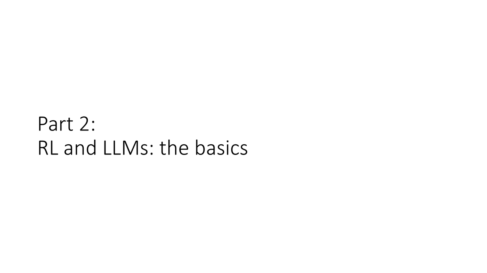
Transformer 架构与下一个 Token 预测
概念详解
Slide 13–14 引入了大语言模型的基础——Transformer 架构（Vaswani et al., "Attention Is All You Need", 2017）。现代 LLM（GPT 系列、Claude、Gemma、LLaMA 等）几乎全部基于 Transformer 或其变体。Transformer 处理序列的核心操作是自注意力（Self-Attention）：
$$\text{Attention}(Q, K, V) = \text{softmax}\left(\frac{QK^T}{\sqrt{d_k}}\right)V$$其中 $Q = XW^Q$（查询）、$K = XW^K$（键）、$V = XW^V$（值）是输入 $X$ 的三个线性投影。自注意力的计算复杂度为 $\mathcal{O}(n^2)$（$n$ 为序列长度），这意味着长文本生成的计算代价随长度平方增长——这是 LLM 推理成本的核心瓶颈。
对于语言模型，Transformer 使用掩码自注意力（Masked Self-Attention）：每个 token 只能"看到"它之前的 token，而不能看到未来的 token。这确保了模型的自回归性质——$p(x_t|x_{1:t-1})$ 的条件概率只依赖于已知的前缀。Slide 14 用动画展示了信息在各层之间的流动路径：每个 Transformer 层包含 (1) 多头掩码自注意力、(2) 逐位置前馈网络、(3) 残差连接和层归一化。堆叠 $L$ 层（典型值 32–96），每一层逐步构建越来越抽象的语言表示。
整架构的训练目标是一个看似简单却极为强大的自监督目标——下一个 Token 预测（Next Token Prediction）：
$$\mathcal{L}_{\text{LM}} = -\sum_{t=1}^{T} \log p_\theta(x_t | x_{1:t-1})$$在数万亿 token 的互联网语料上优化这个损失函数，模型被迫学习语法、事实知识、推理模式甚至某种形式的"世界模型"——因为要准确预测互联网文本中的下一个词，你需要理解物理常识（"球掉到地上会__"）、社会规范（"收到礼物应该说__"）和逻辑推理（"如果 A>B 且 B>C，那么 A__C"）。
深度剖析 — 自回归生成的动力学
从概率角度看，LLM 定义了一个在序列空间上的自回归因子分解：
$$p_\theta(x_1, \ldots, x_T) = \prod_{t=1}^{T} p_\theta(x_t | x_{1:t-1})$$每个条件分布 $p_\theta(x_t | x_{1:t-1})$ 是词表 $\mathcal{V}$ 上的 Softmax 分布（$|\mathcal{V}|$ 通常为 30,000–100,000+）。从 LLM 中生成文本（解码）时，常用策略包括：
- 贪心解码（Greedy）：每步选概率最大的 token——确定性，但容易陷入重复循环
- 温度采样（Temperature Sampling）：$p(x_t) \propto \exp(\text{logit}(x_t) / T)$——$T > 1$ 增加多样性，$T < 1$ 使输出更确定
- Top-k / Top-p（Nucleus）采样：截断低概率尾部后再采样，在质量和多样性间折中
- Beam Search：维护 $B$ 个最可能的候选序列——在翻译等任务中常用，但在开放式生成中容易产生重复
Slide 14 还有一个重要的补充标注："Language models are often trained with supervised learning"（语言模型通常使用监督学习训练）。这一点强调了预训练阶段使用的是自监督学习（预测下一个 token 的交叉熵损失），而非强化学习。RL 只在后训练阶段介入。
关键要点
- Transformer 核心：掩码自注意力 + 前馈网络 + 残差连接，堆叠 L 层（32–96）
- 训练目标 = 下一个 Token 预测：$\mathcal{L} = -\sum_t \log p_\theta(x_t|x_{1:t-1})$
- "下一个 token 预测"逼迫模型隐式地学习语法、事实、推理和世界知识
- 预训练使用监督/自监督学习——RL 在后训练阶段才介入
- 自回归生成的每种解码策略对应一种在质量-多样性轴上的选择
→ 理解 LLM 的架构只是起点。下一个关键问题是：LLM 是如何被训练的？Slide 15–17 揭示了预训练与后训练两个截然不同的阶段，以及 RL 在后训练中的独特角色。
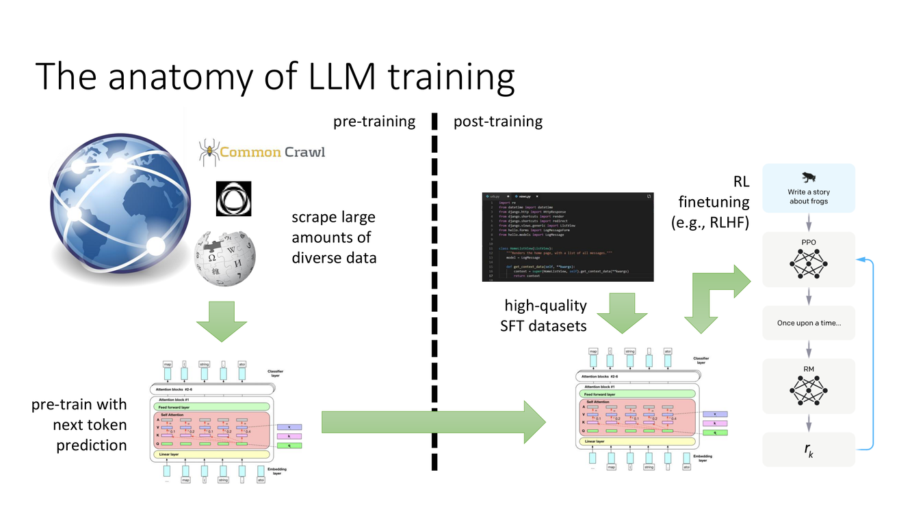
预训练与后训练：LLM 训练的完整图景
概念详解
Slide 15 展示了 LLM 训练的完整流程，分为两个在目标、数据和方法上截然不同的阶段：
阶段 1：预训练（Pre-training）。爬取海量的多样化数据——网页、书籍、代码、论文等，计数万亿 token。使用下一个 token 预测目标进行大规模分布式训练（数千 GPU 运行数月）。这一阶段赋予模型"世界知识"和基础语言能力——语法、推理模式、跨领域的事实知识。预训练的产物是一个"原始的"LLM——它不是助手，不是聊天机器人，只是一个极其强大的文本补全引擎。
Slide 16 尖锐地指出了这一区别："预训练的 LLM 不是智能体、不是助手、不是任何类似的东西——它们只是文本补全引擎"（they are "text completion" engines）。如果你给预训练模型输入"如何制造危险物品：第一步，你需要"，它会忠实地完成这个文本——因为它的训练目标就是最大化下一个 token 的似然，而非判断这个补全是否有害。
阶段 2：后训练（Post-training）。这是让 LLM 从"文本补全器"变为"有用助手"的关键步骤。Slide 15 标注了两种后训练方式：(a) 高质量 SFT 数据集——人工标注的指令-回答对；(b) RL 微调（如 RLHF）——使用强化学习根据人类偏好进一步优化。后训练的目标是告诉模型如何使用它在预训练中获得的知识——什么时候应该回答、什么时候应该拒绝、什么风格是合适的。
深度剖析 — 指令微调的局限与 RL 的必要性
Slide 17 讨论了最基本的后训练方式：指令微调（Instruction Tuning, Chung et al. 2022, "Scaling Instruction-Finetuned Language Models"）。给定数据集 $\mathcal{D}_{\text{SFT}} = \{(x_i, y_i^*)\}$（指令 $x_i$ 和标注员写的理想回答 $y_i^*$），使用标准的监督学习损失来微调模型：
$$\mathcal{L}_{\text{SFT}} = -\sum_{(x, y^*)} \sum_t \log p_\theta(y_t^* | x, y_{1:t-1}^*)$$这等同于在高质量数据上继续做下一个 token 预测——技术上与预训练完全相同，只是数据分布发生了根本变化（从"任意互联网文本"到"有用的回答"）。
指令微调的局限性揭示了 RL 在后训练中不可替代的角色：
- 标注成本：写出高质量的完整回答极其昂贵，尤其对于需要专业知识的任务（编程、数学、法律）。比较两个回答哪个更好则容易得多——这正是 RLHF 利用的"相对偏好"优势。
- 质量天花板：模型只能学到标注员的水平，无法通过自我探索超越。
- 覆盖不完整：不可能为所有可能的指令提供标注——模型必须学会泛化。
- 分布偏移：SFT 训练的是"模仿标注员"，但部署时用户的问题分布可能与标注时的分布不同——模型没有机制来适应这种偏移。
RL 后训练的核心优势：它允许模型从相对反馈中学习（"B 比 A 好"而非"完美的 A 是什么"），并且通过探索可以自我改进——生成候选回答 → 评估 → 优化，循环往复。
关键要点
- 预训练 = 知识获取（下一个 token 预测），后训练 = 知识使用（对齐人类意图）
- 预训练 LLM 是"文本补全引擎"，不是助手——后训练赋予其有用的行为模式
- SFT（指令微调）用监督学习模仿标注员——受限于标注成本和标注质量
- RL 后训练的优势：从相对偏好学习（标注成本低）、可自我改进（探索 + 评估 + 优化）
→ 后训练的两种 RL 范式——偏好学习（RLHF）和验证器学习——分别适用于主观任务和客观任务。Slide 18–19 勾勒了这一分岔。
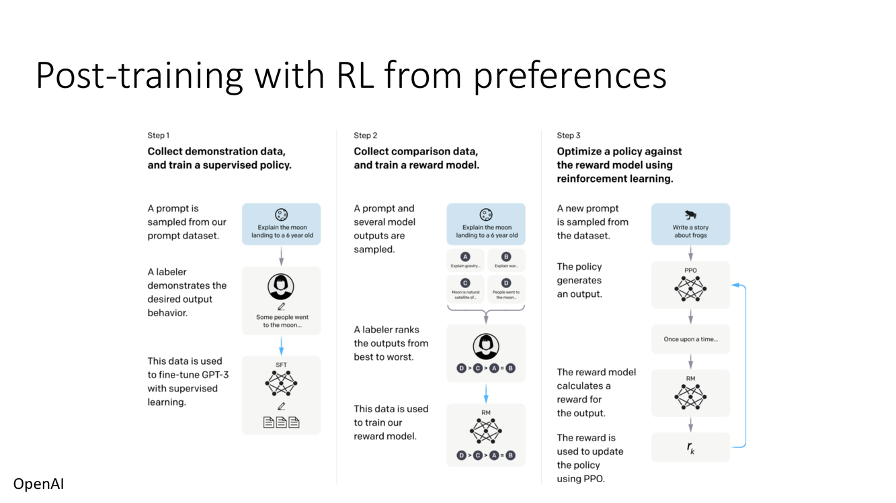
偏好学习 vs 验证器学习
概念详解
Slide 18 展示了从人类偏好中学习的方法——RLHF（Reinforcement Learning from Human Feedback）。流程为：(1) 收集人类对多个模型输出的偏好比较——标注员看到同一个 prompt 的两个回答 $y_A$ 和 $y_B$，选择更好的那一个；(2) 训练一个奖励模型 $r_\psi(y)$ 来预测这些偏好（使用 Bradley-Terry 模型——第4章详细展开）；(3) 使用 RL 来优化语言模型策略，使其生成高奖励的文本。
Slide 19 展示了从验证器（Verifier）中学习的方法。与偏好不同，验证器提供客观的正确性信号：对于数学题，最终答案是否等于标准答案？对于代码，测试用例是否全部通过？对于逻辑推理，结论是否从前提有效推导？验证器奖励是客观的——不依赖于人的主观判断。图中标注"Marjanovic et al. '25"暗示这是一个较新的研究方向。
深度剖析 — 两种范式的对比
这两种 RL 后训练范式代表了 AI 对齐研究中两条互补的路线：
偏好学习（RLHF）适用于没有客观标准答案的任务——写作风格、对话礼貌性、创意生成、摘要质量等。这些任务的共同特征是"好"是主观的——不同的人有不同的偏好。RLHF 通过从大量标注员的共识中学习奖励模型来处理这种主观性。Bradley-Terry 模型将成对偏好聚合为一个一致的奖励函数，奖励模型隐式地代表了"平均标注员"的偏好。
验证器学习适用于有客观标准答案的任务——数学证明、代码生成、逻辑推理等。这些任务的优势是奖励信号可以自动获取（代码可以自动运行测试、数学题可以自动验算），大大降低了人工标注成本。但挑战在于信用分配：如果最终答案正确，推理链中的每一步都该被奖励吗？如果最终答案错误但中间大部分步骤都正确呢？这引出了"过程奖励"（Process Reward）的需求——第4章会详细讨论。
两种方法的结合是当前的前沿方向：在同一个训练流程中同时使用偏好奖励（确保回答风格合适、格式规范）和验证器奖励（确保回答事实正确、逻辑严谨）。这种混合监督方式在数学推理和代码生成的后训练中表现出了显著的协同效应。
关键要点
- RLHF：从人类偏好比较中学习奖励模型 → 适用于主观任务（写作、对话）
- 验证器方法：从客观正确性信号中学习 → 适用于数学、代码等可自动评测的任务
- 偏好标注比"写出完美答案"容易——降低了标注成本和标注员负担
- 混合监督（偏好 + 验证器）= 当前前沿：风格与正确性兼顾
→ 有了高层框架，接下来需要回答一个更基础的问题：LLM 的文本生成在数学上怎么被形式化为一个 RL 问题？Slide 20–24 给出了精确的数学建模。
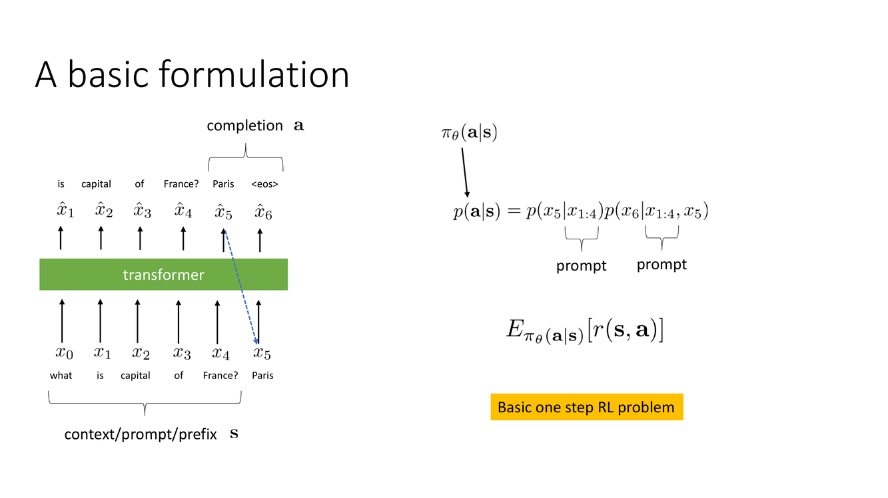
LLM 作为 RL 问题：基本形式化
概念详解
Slide 20 给出了 LLM 文本生成的形式化 RL 定义。这个形式化是将所有后续 RL 算法（PPO、GRPO 等）应用于 LLM 的数学基础：
- 状态 $s_t$：当前上下文 + 已生成的 token 前缀。在 Transformer 中，$s_t$ 自然地被编码为模型在第 $t$ 步看到的输入序列（prompt + 已生成的前 $t-1$ 个 token）
- 动作 $a_t$：下一个 token——从词表 $\mathcal{V}$ 中选一个（$|\mathcal{V}| \approx 30\text{k}–100\text{k}+$）
- 转移 $p(s_{t+1}|s_t, a_t)$：确定性的——将 $a_t$ 追加到 $s_t$ 的末尾得到 $s_{t+1}$。环境动力学在 token 级别是完全确定的（没有随机性）
- 奖励 $r(s_T, a_T)$：通常在序列结束时给定（稀疏奖励）——奖励模型对完整回答的评分，或验证器对最终结果的判断
- 初始状态：prompt $x$（用户输入的问题或指令）
- 终止：生成特殊的 EOS token 或达到最大长度
这构成了一个有限时域 MDP，其中每个 episode 对应一次从 prompt 到完整回答的生成。Slide 20 明确标注"Basic one step RL problem"——强调从 RL 角度看，每个 prompt 代表一个 episode，生成过程是一次长度可变的序列决策。
深度剖析 — LLM-RL 的独特挑战
将 LLM 文本生成形式化为 RL 问题后，出现了几个经典 RL 中未见的独特挑战：
1. 动作空间的规模。词表大小 $|\mathcal{V}|$ 通常在 30,000–100,000+ token。这是一个极大且离散的动作空间。在标准 RL 中（如 Atari 的 18 个动作或连续控制的 6 维空间），我们可以计算所有动作的 Q 值或轻松采样。但在 LLM 中，计算所有 token 的 Q 值需要评估 $|\mathcal{V}| = 50,000$ 个动作——这在每次 token 生成中都是极其昂贵的。这解释了为什么 LLM RL 几乎只使用策略梯度方法（如 PPO、REINFORCE）而非值函数方法（Q-learning）——策略梯度只需要对实际采样动作的 log-prob 求梯度，不需要评估词表中所有动作。
2. 稀疏奖励与信用分配。奖励通常只在完整序列生成后才给出。一条 512 token 的序列中，哪个 token 对最终的高/低奖励"贡献"了最多？这是经典的时间信用分配（Temporal Credit Assignment）问题，在 LLM 的 token 级粒度上尤为突出。GAE 和值函数基线是缓解这个问题的关键工具。
3. KL 散度的坑。策略 $\pi_\theta(y|x)$ 不能偏离预训练模型太远——否则会生成无意义的文本。因此 LLM RL 总是包含一个 KL 正则化项，约束优化后的策略靠近参考策略 $\pi_{\text{ref}}$。这在经典 RL 中没有直接对应——它反映了 LLM 后训练中"保持语言能力"的特殊需求。
关键要点
- LLM 的 RL 形式化：$s_t$=前缀，$a_t$=下一个 token，$p(s_{t+1}|s_t,a_t)$=确定性拼接
- 动作空间 $|\mathcal{V}| = 30\text{k}–100\text{k}+$ → 策略梯度优于 Q-learning
- 奖励通常在序列结束时才给出（稀疏）→ 信用分配是核心挑战
- KL 散度约束防止策略偏离预训练模型太远——LLM RL 的独特需求
→ 有了形式化框架，Slide 22–24 引入具体的算法组件——如何为 LLM 设计策略梯度估计器和 PPO 风格的更新。
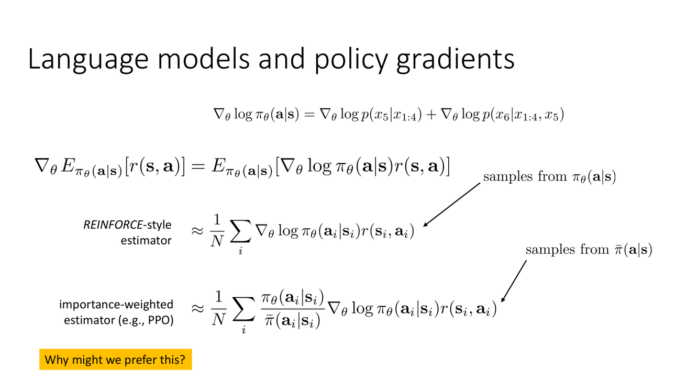
LLM 的策略梯度：REINFORCE 与 PPO
概念详解
Slide 22 引入了策略梯度在 LLM 中最基本的形式。对于一条完整生成的回答 $y = (y_1, \ldots, y_T)$（给定 prompt $x$），REINFORCE 估计器给出的策略梯度为：
$$\nabla_\theta J(\theta) = \mathbb{E}_{y \sim \pi_\theta(\cdot|x)} \left[ \sum_{t=1}^{T} \nabla_\theta \log \pi_\theta(y_t | x, y_{1:t-1}) \cdot \left( r(x, y) - b \right) \right]$$其中 $r(x, y)$ 是完整序列的奖励（通常在最后一步赋予），$b$ 是基线（baseline）用于降低梯度方差。注意：奖励 $r(x, y)$ 对所有时间步 $t$ 使用相同的值——这就是"稀疏奖励"在梯度估计中的直接体现。
Slide 23–24 展示了 PPO 风格的更新在 LLM 中的应用。核心是重要性采样比率（Importance Sampling Ratio），用于在多次更新中重用旧策略的采样数据：
$$\mathcal{L}^{\text{CLIP}}(\theta) = \mathbb{E}_t \left[ \min\left( \rho_t(\theta) \hat{A}_t, \; \text{clip}(\rho_t(\theta), 1-\epsilon, 1+\epsilon) \hat{A}_t \right) \right]$$其中 $\rho_t(\theta) = \frac{\pi_\theta(y_t|x, y_{1:t-1})}{\pi_{\theta_{\text{old}}}(y_t|x, y_{1:t-1})}$ 是新旧策略在 token $y_t$ 上的概率比。Clip 操作防止策略在一次更新中改变过大——这在 LLM 中尤为重要，因为大幅偏离预训练模型的 token 分布会迅速退化生成质量。
深度剖析 — 在 LLM 中使用 PPO 的独特考量
在 LLM 中使用 PPO 与在传统 RL 中使用 PPO 有几个重要区别：
每个 prompt 采样 K 个回答。标准做法是对同一个 prompt 采样多个独立回答（$K$ 通常为 4–16），然后用这些回答的经验平均来估计优势函数。这与 GRPO（Slide 28）的思想一致——同一个 prompt 的多个回答自然构成了一个 mini-batch，其平均奖励提供了无需值函数的基线。
Per-token vs per-sequence 的 Clip。PPO 的 clip 可以在 token 级别（每个 token 的概率比被独立 clip）或序列级别（整个回答的平均概率比被 clip）。Token 级别的 clip 更精细但计算开销更大；序列级别实现更简单。实践中，token 级别的 clip 通常效果更好。
KL 散度惩罚。在 LLM RL 中，PPO 的奖励信号通常被修改为包含 KL 惩罚项：
$$\tilde{r}_t = r(x, y) - \beta \cdot D_{\text{KL}}(\pi_\theta(\cdot|x, y_{1:t-1}) \| \pi_{\text{ref}}(\cdot|x, y_{1:t-1}))$$这个修正鼓励策略在优化奖励的同时保持与参考模型的接近性，防止"奖励黑客"（reward hacking）——策略学会利用奖励模型的缺陷来获取高分，但生成文本实际质量下降。
关键要点
- REINFORCE for LLM：$\nabla_\theta J = \mathbb{E}[\sum_t \nabla_\theta \log \pi_\theta(y_t|\cdot) \cdot (r - b)]$
- 同一个奖励 $r(x,y)$ 用于所有时间步——稀疏奖励的信用分配挑战
- PPO clip 在 token 级别限制策略更新幅度，防止生成质量退化
- KL 散度惩罚 $\beta \cdot D_{\text{KL}}(\pi_\theta \| \pi_{\text{ref}})$ 是防止 reward hacking 的关键
- 对同一 prompt 采样 K 个回答 → 利用样本方差自然降低梯度噪声
→ 有了基本的策略梯度框架，现在可以深入 LLM RL 算法的实际设计。第3章将整合值函数、基线、正则化等组件为完整可工作的算法。
第3章：LLM 强化学习算法设计
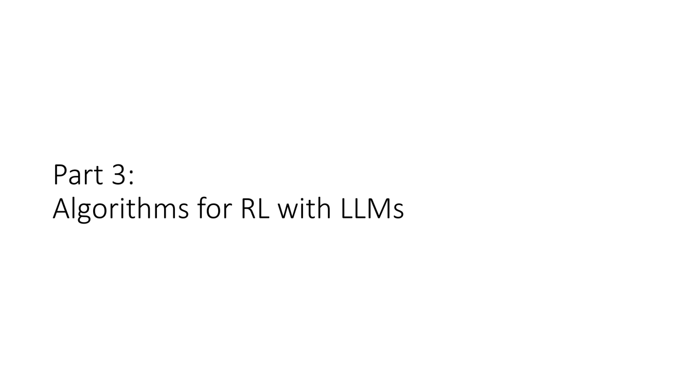
算法设计总览与值函数基线
概念详解
Slide 25 用一整页架构图展示了 LLM RL 的完整算法流程：数据收集（用当前策略为多个 prompt 生成回答）→ 奖励评估（用奖励模型或验证器打分）→ 优势估计（值函数或 GRPO 基线）→ 策略更新（PPO clip + KL 正则化）。Slide 26 标注了三个关键的算法设计决策点：
- 智能地选择基线（baseline）和正则化器（regularizer）
- 智能地设置或学习奖励（reward）
- （隐含在架构图的数据和更新循环中）
Slide 27 深入讨论了值函数基线（Value Function Baseline）在 LLM 中的应用。值函数 $V_\phi(s_t)$ 被训练来预测从当前前缀 $s_t$ 开始的期望累积奖励，然后用于计算优势函数：
$$A(s_t, a_t) = Q(s_t, a_t) - V(s_t) \approx r + \gamma V(s_{t+1}) - V(s_t)$$优势函数 $A$ 替代原始奖励 $r$ 作为策略梯度中的"权重"，显著降低梯度方差，加速收敛。
深度剖析 — LLM 值函数的设计选择
在 LLM 场景中，值函数的设计有几个微妙的考量：
参数共享 vs 独立网络。Slide 27 展示了两个选择：在现有 Transformer 上加一个值函数输出头（"add a new head"）或者复制整个网络作为独立的 Critic（"make a copy of the entire network"）。前者的优势是参数效率高——值函数与策略共享 Transformer 的表示层，避免了存储两个大模型的成本。后者的优势是避免了策略和值函数训练之间的干扰——它们可以在不互相影响的情况下独立优化各自的参数。在资源允许的情况下，独立 Critic 通常更稳定。
只在后缀上训练值函数。值函数 $V_\phi$ 只在模型生成的回答部分（suffix）上训练，而不在 prompt 上训练。原因：prompt 是外生给定的，模型无法控制用户问什么，对 prompt token 估计"价值"不仅没有意义，还会浪费值函数的容量。从工程角度看，这等于把值函数的训练数据限制在模型可以控制的状态上。
GAE 在 LLM 中的应用。广义优势估计（GAE, Schulman et al. 2016）通过组合多步 TD 误差来平衡偏差和方差：
$$A^{\text{GAE}(\gamma, \lambda)} = \sum_{l=0}^{\infty} (\gamma \lambda)^l \delta_{t+l}$$其中 $\delta_t = r_t + \gamma V(s_{t+1}) - V(s_t)$ 是单步 TD 误差。$\lambda \in [0, 1]$ 控制偏差-方差权衡：$\lambda=0$ 退化为单步 TD（高偏差低方差），$\lambda=1$ 等价于 Monte Carlo（无偏差高方差）。在 LLM 场景中，GAE 帮助在 token 级别的稀疏奖励中进行更精准的信用分配。
关键要点
- 三个关键设计：基线选择、正则化器设计、奖励获取方式
- 值函数 $V_\phi$ 只在后缀上训练——prompt 是外生的，不可控
- 参数共享（add head）vs 独立 Critic（copy network）——参数效率 vs 训练稳定性的权衡
- GAE 通过 $\lambda$ 在偏差和方差之间平滑插值——在 token 级信用分配中至关重要
→ 值函数是一个好的基线方案，但它需要训练一个额外的 Critic 网络。有没有不需要值函数的替代方案？Slide 28–29 给出了答案。
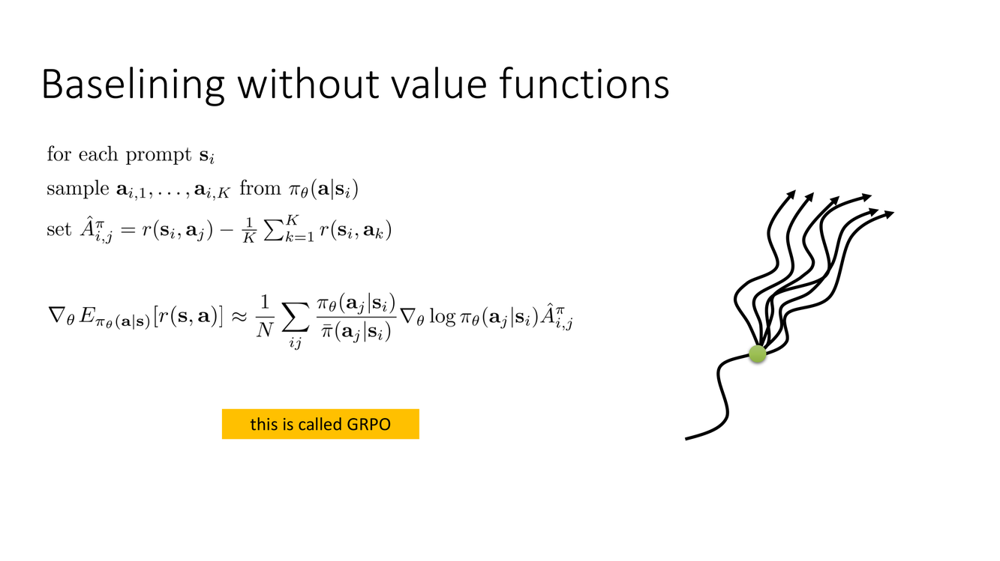
GRPO：无需值函数的基线方法
概念详解
Slide 28 引入了GRPO（Group Relative Policy Optimization）——一种无需训练独立值函数网络的替代方法。GRPO 的核心思想极为简洁：对同一个 prompt，采样 K 个不同的回答，用它们的平均奖励作为基线。
具体算法：对于 prompt $x$，从旧策略采样 $K$ 个独立回答 $y_1, \ldots, y_K \sim \pi_{\theta_{\text{old}}}(\cdot|x)$，用奖励模型 $r$ 对每个回答打分，然后计算组内归一化优势：
$$A(y_i) = \frac{r(y_i) - \text{mean}(\{r(y_1), \ldots, r(y_K)\})}{\text{std}(\{r(y_1), \ldots, r(y_K)\})}$$这个归一化后的优势度量的是：对于这个特定的 prompt，这个特定的回答比"模型平均表现"好多少（以标准差为单位）。正值表示比平均好，负值表示比平均差。这个相对比较天然地消除了 prompt 难度的影响——对于"难的 prompt"（所有回答的奖励都很低），归一化确保好的回答仍然获得正优势；对于"简单的 prompt"（所有回答的奖励都很高），归一化防止对已经很好的行为过度奖励。
深度剖析 — GRPO vs 值函数基线的深层权衡
GRPO 和值函数基线代表了两种不同的方差降低策略：
值函数基线（如 GAE + Critic）通过学习一个显式的 $V_\phi(s)$ 来估计"从这个状态开始，平均能得多少分"。这是跨 prompt 泛化的——值函数试图学习一个在所有 prompt 和所有前缀上定义的全局价值函数。它的优势在于可以利用大量历史数据来学习，劣势在于需要训练和维护一个额外的网络，并且值函数估计的误差会直接影响策略梯度。
GRPO使用同一个 prompt 的 $K$ 个样本的组内平均作为基线。这是per-prompt 局部估计——不需要跨 prompt 泛化，不需要额外的网络。它的优势在于实现简单、不受值函数估计误差影响、且自然避免了"不同 prompt 难度不同"导致的方差。劣势在于：每个 prompt 需要 $K$ 个样本（增加了推理成本），且 $K$ 个样本的组内平均只有在 $K$ 足够大时才是一个好的基线。
Slide 29 介绍了参考模型正则化（Reference Model Regularization）——LLM RL 中另一个关键组件。在策略优化的目标函数中加入 KL 散度惩罚项：
$$\mathcal{L}(\theta) = \mathbb{E}_{y \sim \pi_\theta}[r(y)] - \beta \cdot D_{\text{KL}}(\pi_\theta(\cdot|x) \| \pi_{\text{ref}}(\cdot|x))$$其中 $\pi_{\text{ref}}$ 通常是预训练模型（或 SFT 后的模型），$\beta$ 控制正则化强度。这个惩罚项有双重作用：(1) 防止策略生成无意义的文本——如果偏离预训练模型太远，语言模型会"崩溃"；(2) 防止奖励黑客（reward hacking）——策略可能学会利用奖励模型 $r_\psi$ 的缺陷（如生成奖励模型评分高但实际质量差的文本），KL 约束确保策略不会飘移到奖励模型不可靠的区域。
关键要点
- GRPO 用同一 prompt 的 K 个回答的组内平均作为基线——无需值函数
- 组内归一化 $A(y_i) = (r(y_i) - \text{mean})/\text{std}$ 自然消除 prompt 难度差异
- 参考模型正则化通过 $-\beta \cdot D_{\text{KL}}(\pi_\theta \| \pi_{\text{ref}})$ 约束策略行为
- 双重防护：防止语言退化 + 防止奖励黑客
- Slide 30 将所有组件（基线选择、正则化、奖励学习）整合为统一的算法架构
→ 算法框架已经建立。现在需要回答最关键的问题之一：奖励函数本身从何而来？第4章深入 RLHF 的奖励学习部分——Bradley-Terry 模型。
第4章：偏好与验证器
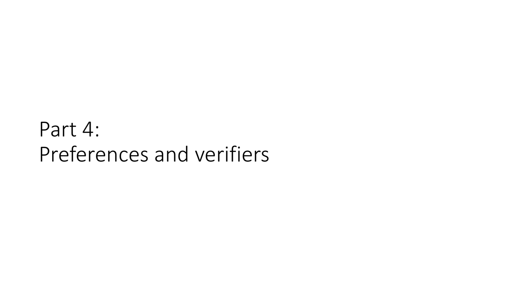
Bradley-Terry 偏好模型
概念详解
Slide 31 以一个问题开启了第4章："如果我们不知道奖励函数怎么办？"（What if we don't know the reward?）这正是 RLHF 面临的核心挑战——没有一个预先定义好的奖励函数来评判 LLM 输出的质量；我们有的只是人类对"回答 A 比回答 B 更好"的偏好比较数据。这需要通过一个统计模型将这些离散的偏好转化为连续的奖励分数。
Slide 32 引入了Bradley-Terry 模型（也称为"验光师算法"——因为验光师通过反复比较"镜片 A 更清晰还是镜片 B 更清晰"来确定最佳度数）。这个模型假设：两个回答 $y_1$ 和 $y_2$ 之间，人类偏好 $y_1$（记作 $y_1 \succ y_2$）的概率由其隐含的"真实质量分数"通过一个 Sigmoid 函数决定：
$$p(y_1 \succ y_2) = \frac{\exp(r(y_1))}{\exp(r(y_1)) + \exp(r(y_2))} = \sigma(r(y_1) - r(y_2))$$其中 $\sigma(z) = 1/(1+e^{-z})$ 是 Sigmoid 函数，$r(y)$ 是回答 $y$ 的隐含奖励/质量分数。这个模型的关键洞察是：所需要的只是相对比较——"A 比 B 好"——而不是"在 1-10 分尺度上，A 是 8 分"这样的绝对评分。标注员比较两个回答比独立打分更容易、更一致。
深度剖析 — Bradley-Terry 的统计性质与训练
Slide 32–33 指出 Bradley-Terry 模型与棋类 Elo 评分系统使用同一种数学原理。在 Elo 中，玩家 A 击败玩家 B 的概率由他们的评分差异通过逻辑函数决定——这正是 Bradley-Terry。这一联系意味着学到的奖励分数具有明确的概率解释：奖励差 $\Delta r = r(y_1) - r(y_2)$ 为 0 时偏好概率为 50%（两个回答同样好），$\Delta r = 1$ 时偏好概率为 $\sigma(1) \approx 73\%$（$y_1$ 有 73% 的概率被偏好），$\Delta r = 2$ 时约 88%，以此类推。
奖励模型 $r_\psi$ 的训练等价于一个逻辑回归（logistic regression）问题。给定偏好数据集 $\mathcal{D} = \{(y_w, y_l)\}$（$y_w$ 是被偏好的"winner"，$y_l$ 是"loser"），训练目标是最小化负对数似然：
$$\mathcal{L}(\psi) = -\sum_{(y_w, y_l) \in \mathcal{D}} \log \sigma(r_\psi(y_w) - r_\psi(y_l))$$这等价于一个二分类交叉熵损失——奖励模型需要学会"区分"更好和更差的回答。与需要绝对评分的回归方法不同，这个损失函数对评分漂移（如所有分数整体 +5）是不变的——它只依赖于相对差异，天然地适应了标注员之间的评分尺度差异。
指数假设的含义。Bradley-Terry 模型的核心假设是"指数上更受偏好的轨迹对应更高的奖励"（"better trajectories are exponentially more likely to be chosen based on their reward"）。这个指数关系的假设意味着：要做到"显著更可能被偏好"（如 95% 的概率），奖励需要领先约 $\log(19) \approx 3$ 个自然单位。而微小的奖励差异（如 0.1）在偏好概率上几乎不可区分（$\sigma(0.1) \approx 52.5\%$）。这种"奖励差异 → 偏好概率"的非线性映射，在大规模偏好数据上提供了有效的正则化——微小的奖励波动不会导致剧烈的偏好概率变化。
关键要点
- Bradley-Terry 模型：$p(y_1 \succ y_2) = \sigma(r(y_1) - r(y_2))$——Sigmoid 函数将奖励差映射为偏好概率
- 只需要相对比较（"A vs B 谁更好"），不需要绝对评分——降低标注难度
- 训练等价于逻辑回归：$\mathcal{L} = -\sum \log \sigma(r_\psi(y_w) - r_\psi(y_l))$
- 与 Elo 评分系统同构——奖励差有明确的概率解释
- 指数假设赋予模型良好的正则化性质：微小的奖励差异不会剧烈改变偏好概率
→ Bradley-Terry 模型提供了从偏好到奖励的桥梁。Slide 34–38 将它整合为完整的 RLHF 算法流程。
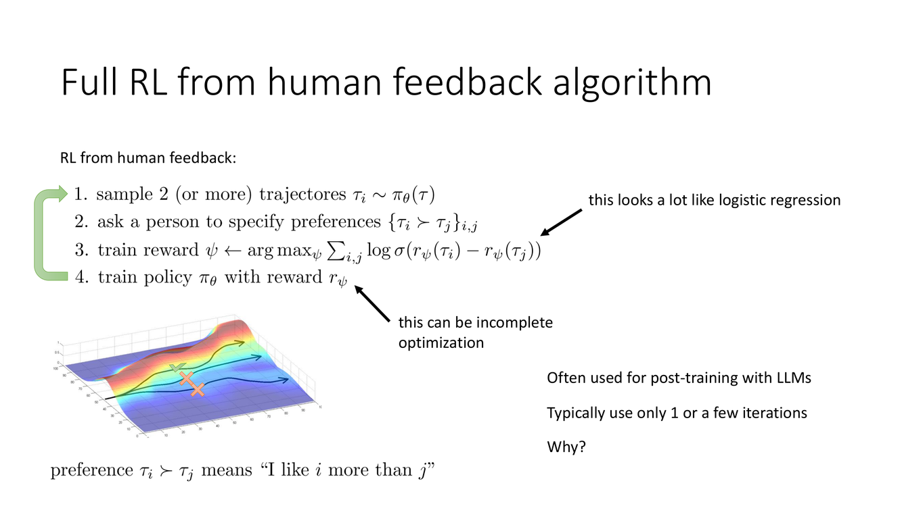
RLHF 完整算法流程
概念详解
Slide 34–38 展示了 RLHF 的完整三步循环，这是现代 LLM 后训练的标准范式：
步骤 1：收集偏好数据。使用当前策略模型 $\pi_\theta$（初始化为 SFT 模型），对一批 prompt 中的每一个生成多个不同的回答（"on-policy responses for the same prompt"）。将成对的回答 $y_A, y_B$ 展示给人类标注员，标注员选择更偏好的那个。这一步骤确保了偏好数据是在策略上（on-policy）的——标注员评估的是当前模型实际会生成的回答，而非来自某些历史分布的旧回答。
步骤 2：训练奖励模型。使用 Bradley-Terry 模型（等价于逻辑回归）从偏好数据中学习奖励函数 $r_\psi$。Slide 34 特别标注了一个重要的实践要点——"this can be incomplete optimization"（奖励模型的训练不需要达到完美收敛）。在实践中，通常只做少量迭代（"Typically use only 1 or a few iterations"），因为过度优化的奖励模型会在训练数据上过拟合，反而在 RL 优化中更容易被策略"黑客"。
步骤 3：用 RL 微调策略。将学到的奖励模型 $r_\psi$ 作为奖励信号，使用 PPO（或 GRPO 等变体）来优化语言模型策略 $\pi_\theta$。这一步包含 KL 散度正则化 $\beta \cdot D_{\text{KL}}(\pi_\theta \| \pi_{\text{ref}})$，确保策略在优化奖励的同时不偏离参考模型（通常是初始的 SFT 模型）太远。
深度剖析 — "只用 1 次或很少几次迭代"的原因
Slide 34 提出了一个关键问题："Why?"——为什么 RLHF 通常只运行 1 次或很少几次（1-3 次）完整的"偏好收集 → 奖励训练 → RL 微调"循环？答案涉及 RLHF 的多个内在限制：
1. 奖励模型的不完美性。Bradley-Terry 奖励模型只是一个近似——它无法完美地捕获人类偏好的所有细微之处和语境依赖性。奖励模型在训练数据上只有有限的泛化能力。随着 RL 优化的进行，策略会逐渐生成落在奖励模型训练分布之外的回答——在这些新回答上，奖励模型可能给出高度不准确的评分。更危险的是，策略可能学会利用奖励模型的结构性缺陷（reward hacking）——例如生成表面上看起来很好（奖励模型给高分）但实际质量很差的文本。
2. 分布漂移的恶性循环。每一轮 RL 优化都会改变策略 $\pi_\theta$，从而改变策略生成的数据分布。但奖励模型是在"旧"策略（$\pi_{\theta_{\text{old}}}$）的数据上训练的。随着策略的漂移，策略生成的数据与奖励模型的训练数据之间的分布差异（distribution gap）越来越大 → 奖励模型在新数据上的评分越来越不可靠 → 策略被错误的奖励信号引导到越来越偏的方向。
3. 人类标注的经济约束。每一轮收集新鲜的人类偏好数据都需要时间和金钱。在每一轮 RL 后重新收集大量高质量的偏好标注是昂贵的，而且标注疲劳和质量衰减是实际问题。
Slide 37–38 展示了 RLHF 在 LLM 训练中的工程细节：奖励只赋给生成序列的最后一步——"Reward is assigned only at the last step of the generation"。这意味着整个 512+ token 的生成过程只从最终的一个奖励信号中获得反馈，信用分配需要通过值函数或 GRPO 来间接完成。Slide 38 用一图总结了所有涉及的模型及其关系：预训练 LLM → SFT 模型 → 当前策略 $\pi_\theta$（正在被 RL 优化）、参考模型 $\pi_{\text{ref}}$（SFT 模型的冻结副本）、奖励模型 $r_\psi$。
关键要点
- RLHF 三步循环：收集偏好 → 训练奖励模型 → RL 微调策略
- 通常 1-3 轮足够——原因：奖励模型不完美、分布漂移、标注成本、reward hacking 风险
- 奖励模型训练是"不完整优化"——过度训练反而有害
- 奖励只在生成最后一步给出（稀疏）→ 需要 GAE/GRPO 处理信用分配
- 四模型关系图：预训练 → SFT → 策略（被优化）、参考（冻结）、奖励（评分）
→ RLHF 的奖励模型基于主观的人类偏好。但有些任务——如数学和编程——有客观的正确性信号。Slide 39 展示了验证器奖励和过程奖励的概念。
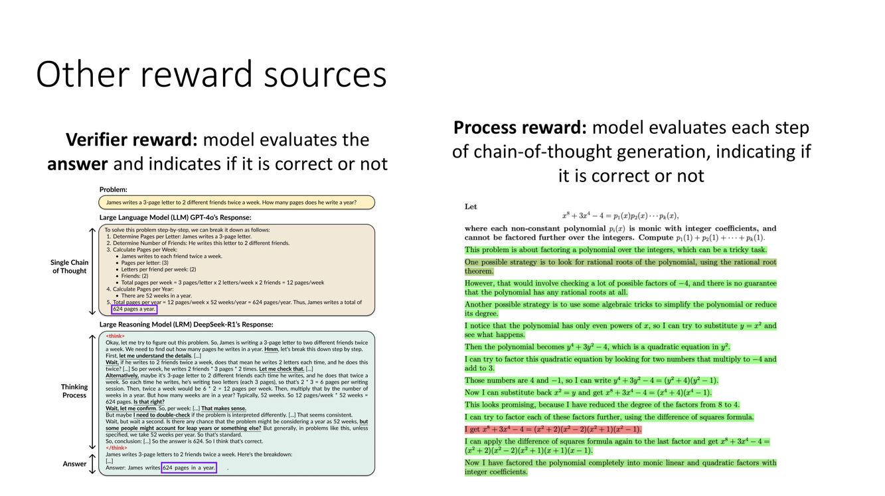
验证器奖励与过程奖励：结果监督与过程监督
概念详解
Slide 39 扩展了奖励来源的讨论，引入了 RLHF 偏好奖励之外的两种奖励信号：
验证器奖励（Verifier Reward）：模型评估最终答案并判断其是否正确。对于数学问题——"最终数值是否正确？"对于代码生成——"测试用例是否全部通过？"对于逻辑推理——"结论是否能从前提推导出来？"验证器奖励的关键特征是客观性——它不依赖于人的主观判断，答案要么对要么错，可以自动计算。但验证器奖励是极端稀疏的：只知道最终答案对或错，不知道推理链中的哪些步骤是正确的、哪些是导致错误的关键步骤。
过程奖励（Process Reward）：模型评估思维链（Chain-of-Thought）生成过程中的每一步，判断每一步推理是否正确。过程奖励提供了细粒度的监督信号——每一步推理都能得到"对"或"错"的反馈。这使得信用分配问题从"这 500 个 token 中哪个导致最终答案错误？"变为"第 7 步推理出了错——只在这一步及其之后给予负向信号"。
深度剖析 — 结果监督 vs 过程监督
验证器奖励和过程奖励代表了从"结果监督"（Outcome Supervision）到"过程监督"（Process Supervision）的演进。这一区分在数学推理和长链条逻辑任务中尤为关键：
结果监督的局限：假设模型生成了一条 12 步的数学推导链，最终答案正确。结果监督会给予整条链一个正向奖励——但这包括了可能在第 5 步"蒙对"的错误推理。更糟糕的是，如果最终答案错误但前 10 步完全正确（只在最后两步出错），结果监督给予整条链负向奖励——惩罚了绝大部分正确的行为。这种粗粒度的反馈使得优化信号极度嘈杂。
过程监督的优势：每一步推理得到独立的正确/错误判断。如果第 7 步推理出错，只有第 7 步及之后依赖于它的步骤被标记为错误；第 1-6 步的独立正确推理仍然获得正向奖励。这使得优化信号精确——模型知道具体在哪一步犯了什么类型的错误，从而能更有效地学习修正。
过程奖励的实现方法包括：(1) 人工标注每一步的正确性（昂贵但最准确）；(2) 自动验证中间步骤——如使用符号计算引擎验证代数变换的等价性；(3) 过程奖励模型（Process Reward Model, PRM）——训练一个独立的模型来自动判断中间推理步骤的正确性。OpenAI 的"Let's Verify Step by Step"（Lightman et al., 2024）是这一方向的关键工作。
关键要点
- 验证器奖励 = 判断最终答案对错 → 客观但稀疏（结果监督）
- 过程奖励 = 判断推理链中每一步的对错 → 细粒度但更难实现（过程监督）
- 过程监督比结果监督提供更丰富的训练信号——尤其适合长链条推理任务
- 过程奖励的实现：人工标注 → 自动验证 → 过程奖励模型（PRM）
→ 前四章的讨论都在完全可观测 MDP 的框架内进行。但现实世界——以及 LLM 的某些复杂应用——经常涉及不完全可观测性。第5章引入 POMDP 的概念，为整个课程系列埋下重要的伏笔。
第5章：部分可观测性与 POMDP
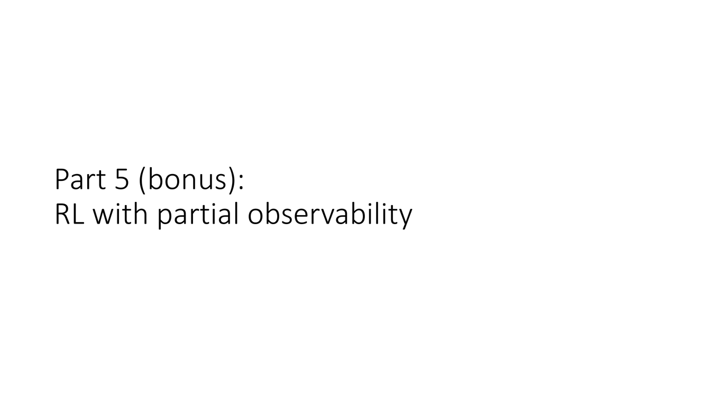
超越 MDP：POMDP 的定义与核心特征
概念详解
Slide 40–41 将课程从标准的 MDP 框架扩展到部分可观测马尔可夫决策过程（Partially Observed MDP, POMDP）。在标准 MDP 中我们假设智能体能够完整地观测环境状态 $s_t$。但 Slide 40 直截了当地指出："大多数现实世界问题都是这样的！"（Most real-world problems are like this!）——在真实世界中，传感器是不完美的、信息是不完整的、有些状态维度本质上是隐藏的。
POMDP 由七元组 $(\mathcal{S}, \mathcal{A}, \mathcal{O}, T, O, r, \gamma)$ 定义，其中 $\mathcal{O}$ 是观测空间，$O(o|s)$ 是观测模型（给定真实状态 $s$ 时观测到 $o$ 的概率），$T(s'|s,a)$ 是转移模型。智能体永远看不到真实的 $s_t$，只能看到从一个概率分布 $O(\cdot|s_t)$ 中采样的观测 $o_t$。
Slide 41 标注了 POMDP 的两个标志性特征：
- 状态不满足马尔可夫性：$p(s_{t+1}|o_t) \neq p(s_{t+1}|o_t, o_{t-1}, \ldots)$。当前的观测 $o_t$ 不能唯一确定未来的转移概率——由于 $o_t$ 是 $s_t$ 的噪声投影，不同的真实状态可能产生相同的观测，而这些不同真实状态有不同的转移后果。因此，历史信息对于准确预测未来是不可或缺的。
- 真实状态未知：智能体永远无法直接访问 $s_t$，只能通过不完美、可能有噪声的观测来间接推断。
深度剖析 — POMDP 如何颠覆标准 RL 的直觉
Slide 42 展示了 POMDP 导致的两个反直觉现象，它们深刻地挑战了标准 MDP 框架下的直觉：
现象 1：信息收集动作（Information-Gathering Actions）。在 POMDP 中，有些动作的主要目的不是获得即时奖励，而是减少不确定性以做出更好的后续决策。例如：在导航中"探头拐角处看看"——这个动作本身不会让你更接近目标，但能帮你决定走左边还是右边。在对话系统中问一个澄清问题——不会直接完成任务，但能帮你更好地理解用户意图。这种"为获取信息而行动"的行为在标准 MDP 框架中根本不可能出现——因为在 MDP 中，你总是能看到完整的状态，不存在"不确定性需要解决"。
现象 2：随机策略可以严格优于确定性策略。在标准 MDP 中，至少存在一个确定性的最优策略（Puterman, 1994）。但在 POMDP 中，随机策略可以严格优于任何确定性策略。Slide 42 展示了一个经典的简化例子：智能体在状态 A 和 B 中无法区分（相同的观测），从 A 开始，动作 1 在 A 中正确、在 B 中错误，A 有 50% 概率转移到 B。确定性策略"总是选动作 1"在 B 状态会得到很差的奖励；而一个随机策略"以 50% 概率选动作 1"可以打破由观测模糊性造成的"确定性陷阱"。关键洞察：在 POMDP 中，随机化可以防止环境（或对手）利用智能体确定性行为模式中的可预测性。
关键要点
- POMDP = MDP + 部分可观测：智能体只能看到 $o_t \sim O(\cdot|s_t)$，而非真实的 $s_t$
- 两个特征：观测不满足马尔可夫性 + 真实状态永远隐藏
- 信息收集动作：主要目标是减少不确定性，而非获得即时奖励——在 MDP 中不可能
- POMDP 中随机策略可以严格优于确定性策略——颠覆标准 RL 的基础直觉
→ POMDP 给标准 RL 方法带来了根本性挑战。哪些方法能适应？哪些方法会崩溃？Slide 43–47 给出了系统的分析。
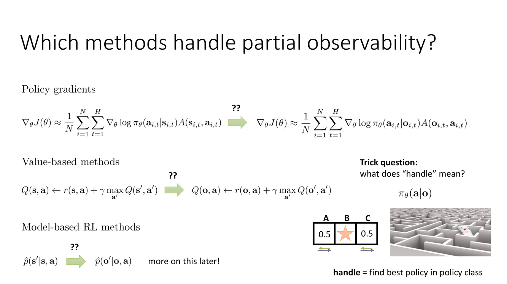
各 RL 方法在 POMDP 中的表现
概念详解
Slide 43 提出了一个关键的区分性问题："哪些方法能处理部分可观测性？"（Which methods handle partial observability?）答案取决于"handle"的含义——是"找到策略类别中的最优策略"还是"找到真正的最优策略"。Slide 43 的答案是：策略梯度方法可以直接处理 POMDP；值函数方法需要特别小心。
策略梯度方法（如 REINFORCE、PPO）：可以在 POMDP 中直接工作，不需要修改算法本身。原因在于策略梯度不依赖于贝尔曼方程——贝尔曼方程需要马尔可夫性（$V(s)$ 的定义假设了"给定当前状态，未来与过去无关"）。策略梯度直接对策略参数求期望累积奖励的梯度 $\nabla_\theta J(\theta) = \mathbb{E}[\sum_t \nabla_\theta \log \pi_\theta(a_t|h_t) \cdot R_t]$——只要策略 $\pi_\theta$ 能够访问足够的历史信息 $h_t$（如通过 RNN 或 Transformer 编码观测-动作历史），它就可以在不满足马尔可夫性的环境中找到好的策略。
值函数方法（如 Q-learning、DQN）：依赖贝尔曼方程 $Q(s,a) = r + \gamma \max_{a'} Q(s', a')$——这个方程隐含地假设了"给定当前状态 $s$，未来期望回报与过去状态独立"。在 POMDP 中，由于 $s_t$ 被 $o_t$ 替代，而 $o_t$ 不满足马尔可夫性，贝尔曼方程不再成立。Slide 44 精确地指出了问题："every time we see this state, we expect to get this value, regardless of past states"（每次我们看到这个状态，我们期望得到这个值，不管过去状态如何）——这个假设在 POMDP 中不成立。
Actor-Critic 方法：取决于 Critic 的设计。如果 Critic 也使用了历史信息来构建其"状态"表示（如 RNN-based Critic），它可以（近似地）恢复马尔可夫性，从而在 POMDP 中工作。
深度剖析 — 为什么 Q-learning 在 POMDP 中会崩溃
Slide 47 用一个具体例子展示了值函数方法在 POMDP 中的困境。考虑两个真实状态 $s_A$ 和 $s_B$，它们产生相同的观测 $o$（"感知混叠"）。在真实环境中，最优动作在 $s_A$ 中可能是"向左"，在 $s_B$ 中可能是"向右"。但 Q-learning 只能学习 $Q(o, \cdot)$——对同一观测 $o$，它只能存储一个 Q 值向量。因为 $o$ 不能区分 $s_A$ 和 $s_B$，Q-learning 学到的 $Q(o, a)$ 是对两个真实状态 $(s_A, s_B)$ 下期望回报的一种平均——这个平均策略通常不是两个真实状态各自的最优策略。更糟糕的是，这种"平均"不是智能体可以控制的——它完全由环境决定的观测噪声结构造成。
策略梯度方法可以（部分地）绕过这个问题：如果策略被参数化为依赖历史而非仅依赖当前观测——即 $\pi_\theta(a|h_t)$ 而非 $\pi_\theta(a|o_t)$——那么即使观测不区分 $s_A$ 和 $s_B$，包含观测-动作历史的 $h_t$ 可能能区分它们。例如，如果在 $s_A$ 中"向左"导致高奖励且转移到某个独特的观测，那么历史中包含了这个差异信息，策略可以学会"如果历史显示之前在这个观测下向左得到了高奖励，那么继续向左；否则向右"。
但关键的限制是：策略梯度只能找到"策略参数化类别内的最优策略"。如果策略被参数化为仅依赖当前观测的无记忆函数 $\pi_\theta(a|o_t)$，那么即使是策略梯度也无法克服 POMDP 的根本信息缺失。
关键要点
- 策略梯度：不依赖贝尔曼方程 → 可直接在 POMDP 中工作（无需修改算法）
- Q-learning/DQN：依赖贝尔曼方程 → 在 POMDP 中会失败（马尔可夫性假设不成立）
- Actor-Critic：取决于 Critic 的设计——如果 Critic 使用历史信息则可以工作
- 关键条件：策略（和 Critic）必须能访问和利用观测-动作历史——$\pi_\theta(a|h_t)$ 而非 $\pi_\theta(a|o_t)$
- 策略梯度只能找到策略类别中的最优解——参数化能力决定性能上限
→ 观测 $o_t$ 不满足马尔可夫性 → 我们需要一个"更好"的状态表示。Slide 48–51 给出了两类解决方案：状态空间模型和历史状态。
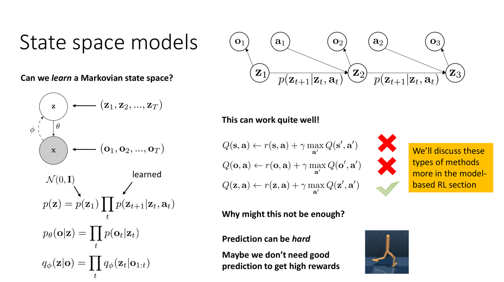
状态空间模型与历史状态
概念详解
Slide 48–51 给出了应对 POMDP 的两大类方案：
方案 1：状态空间模型（State Space Models, SSM）。核心思想是学习一个潜在状态表示 $z_t$，使 $z_t$ 相对于原始观测 $o_t$ 更接近满足马尔可夫性。如果我们可以学习函数 $f_\phi$ 将观测序列 $(o_1, \ldots, o_t)$ 编码为紧凑的潜在状态 $z_t = f_\phi(o_1, \ldots, o_t)$，使得 $p(s_{t+1}|z_t) \approx p(s_{t+1}|z_t, z_{t-1}, \ldots)$（即 $z_t$ 近似捕获了所有与未来预测相关的历史信息），那么我们可以在学习到的潜在状态空间上恢复标准 MDP 的所有方法。
这就是状态空间模型（SSM）的哲学——学习一个"信念状态"（belief state）或"潜在状态"（latent state），它满足或近似满足马尔可夫性。从 Kalman 滤波器到最新的 Mamba 架构，这个基本思想跨越了数十年的控制和机器学习研究。在深度学习中，RNN、LSTM 和 Transformer 都可以被视为学习这种状态表示的架构。
Slide 48 指出这种方法的两个潜在局限：(1) 预测可能很难——为预测而优化的状态表示不一定是为控制而优化的最优表示；(2) 也许我们不需要好的预测就能获得高奖励——这一点将在后续 model-based RL 的讲座中深入讨论（某些情况下，对某些状态维度的精确预测对最优控制来说是不必要的）。
方案 2：历史状态（History States）。更直接的方法——将整个观测-动作历史直接作为"状态"。定义 $h_t = (o_1, a_1, o_2, a_2, \ldots, o_t)$ 为迄今为止所有观测和动作的序列。这个"历史状态"定义上满足马尔可夫性——因为它包含了自环境开始以来的所有信息。但问题在于维度爆炸：$h_t$ 的维度随时间线性增长，且每次都需要将整个历史输入模型。
深度剖析 — 序列模型架构与 POMDP 的总结
Slide 50 讨论了表示历史的实际架构选择：
固定长度历史（Fixed Short History）：只使用最近 $N$ 步的观测和动作。这在很多场景下"效果还不错"——因为较远的过去对当前决策的影响通常以折扣因子 $\gamma$ 衰减。但在需要"长期记忆"的任务中（例如，你需要记得 100 步之前看到的一个路标来决定现在走哪边），截断历史会导致信息丢失。Slide 50 评价道"有时这是不好的"（Sometimes... Is that bad? Sometimes...）——答案取决于任务需要多长的记忆。
序列模型（Sequence Model）：使用 RNN、LSTM 或 Transformer 将任意长度的历史 $h_t$ 压缩为一个固定维度的嵌入向量。Transformer 通过自注意力机制自动地对历史中的所有时间步进行加权——让模型自适应地决定哪些历史信息是重要的、哪些可以忽略。在 LLM 中，模型本身就是 Transformer，所以使用 full context 作为"状态"是自然的选择。
Slide 51 以一句醒目的总结收尾："POMDPs are weird!"（POMDP 很奇怪！）——它们挑战了许多基于 MDP 的直觉。"有些方法可以直接用"（策略梯度方法可以）、"但最高效的方法不能，因为它们需要值函数"（Q-learning 等需要马尔可夫性）、"我们甚至不需要为控制优化完美地建模状态"（预测与控制之间存在张力）。这最后一点正是 model-based RL 讲座（Lectures 15+）的核心前提——有时一个"足够好"的状态表示比一个完美的预测模型更有用。
关键要点
- 方案 1（SSM）：学习满足马尔可夫性的潜在状态 $z_t$——预测与控制之间存在张力
- 方案 2（历史状态）：$h_t = (o_{1:t}, a_{1:t-1})$——定义上满足马尔可夫性，但维度爆炸
- Transformer 自然地充当序列模型来编码任意长历史 → LLM 中的天然优势
- POMDP 的核心教训：预测好 ≠ 控制好；马尔可夫性是一个谱而非二值属性
- 本讲的 POMDP 讨论为 Model-Based RL（Lec 15+）埋下了关键伏笔
第14讲 总览
第14讲是 CS 285 课程中横跨面最广的一讲——它用一条"从数据中学习奖励/偏好来驱动决策"的主线，将看似独立的三个领域串联了起来：
线头 · IRL 与 GAN（Slide 2–12）：从逆强化学习的奖励函数推断出发，揭示了 IRL 与 GAN 在数学上的精确等价——两者都是"判别器/奖励 vs 生成器/策略"的二人零和博弈。GAIL 提供了简化的实现路径，但代价是收敛后判别器丧失泛化能力——这一取舍直接影响了 RLHF 为什么选择"先学奖励模型再优化"的 IRL 范式。
主线 · LLM 的 RL 训练（Slide 13–39）：IRL 的核心思想——从相对比较中学奖励——在大语言模型的后训练中找到了最壮观的实践场景。Bradley-Terry 模型将人类的离散偏好转化为连续的奖励分数（$\sigma(r(y_w)-r(y_l))$）；PPO/GRPO 在这个奖励的引导下优化语言模型的 token 生成策略；KL 正则化确保优化不会以语言能力为代价。这部分的数学框架——LLM 作为 MDP、策略梯度作为优化器、偏好作为监督——构成了现代 LLM 对齐训练的理论根基。
线尾 · POMDP（Slide 40–51）：当我们的视野从完美的 MDP 延伸到大部分真实问题所处的部分可观测世界时，标准 RL 的许多直觉需要重新审视。信息收集动作、随机最优策略、Q-learning 的失败——POMDP 框架提醒我们：现实中的决策总是在不确定性中进行的，而这个"不确定性"正是连接本讲与后续 Model-Based RL 的桥梁。当模型自己对环境也存在不确定性时（Lec 15+），POMDP 提供的分析框架将发挥关键作用。
从 IRL 到 RLHF 到 POMDP——这条知识弧线勾勒了现代强化学习从理论到实践再到前沿的核心路径。